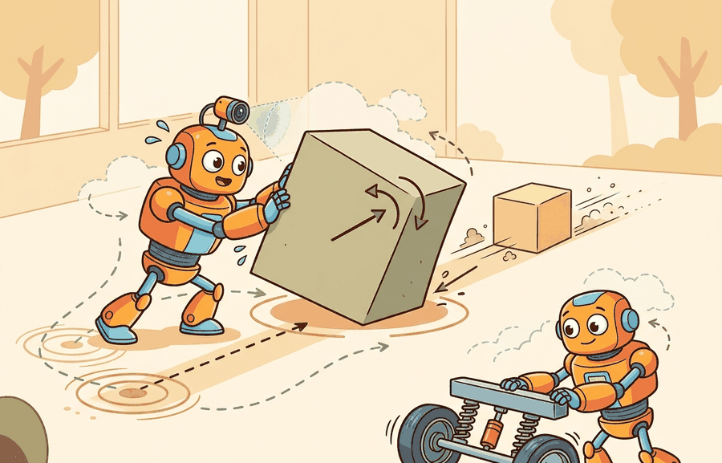

"Kinematics maps the trajectory. Dynamics signs the invoice: so many newtons, so much inertia, paid in full at every timestep."
Section 6.1

This section assumes familiarity with forward kinematics and joint-angle representations from section 5.5. The recursive Newton-Euler algorithm introduced here is extended in section 6.2, which derives the full manipulator equation from the same wrench-propagation logic, and in section 6.3, which shows how contact forces complicate the picture when the robot touches its environment.
A robot arm commanded to lift a 5 kg payload from rest to full speed in 0.1 seconds can trace that arc perfectly in simulation yet tear its own shoulder joint in reality, because kinematics only asks where, not how hard. Dynamics adds the invoice: forces, torques, and inertia that determine whether motors can actually execute the motion. As embodied AI moves from lab demos to real manipulation, getting torque budgets wrong is the primary reason controllers fail on contact. This section builds the recursive Newton-Euler algorithm from first principles so you can compute joint torques, predict actuator limits, and build simulation loops that respect physics rather than merely describing geometry.
Kinematics alone is not enough to control a physical robot. A kinematic planner can find a joint-angle trajectory that avoids collisions and reaches the goal, but it says nothing about whether the robot's motors can actually execute that trajectory. Consider a robot arm commanded to lift a 5 kg payload from rest to full speed in 0.1 seconds: kinematics permits the motion, but dynamics reveals whether the shoulder joint can supply the 80 N·m peak torque the acceleration demands. If it cannot, the arm overshoots, oscillates, or triggers a protective shutdown. Dynamics is the discipline that adds forces, torques, and inertia to the geometric picture, making the difference between a path that is geometrically possible and one that is physically executable.
Kinematics grants permission; dynamics presents the bill. Figure 6.1A makes this concrete with a free-body diagram of a single link, where gravity, applied torque, and the inertia tensor together set the angular acceleration the actuator must produce.
The diagram above previews the algorithm at the heart of this transition: a forward sweep that carries velocity and acceleration outward from base to tip, followed by a backward sweep that carries forces and torques inward and reads off the joint torque at each step. This section develops the kinematics-to-dynamics transition into a usable computational tool. The central object is the rigid-body equation of motion $M(q)\ddot{q} + h(q,\dot{q}) = \tau$, where $M(q)$ is the configuration-dependent joint-space inertia matrix, $h$ collects Coriolis, gravity, and friction terms, and $\tau$ is the actuator torque vector. We derive how to compute $\tau$ efficiently via the recursive Newton-Euler algorithm, connect that computation to actuator limit checking, and test the result against the closed-form manipulator equation on a 2-link arm before scaling to higher DOF.
The key practical question is: given a desired joint-space trajectory $(q(t), \dot{q}(t), \ddot{q}(t))$, can the robot's actuators supply the required torques without saturating, overheating, or violating contact constraints? On a Franka Panda, joint 1 is rated to 87 N·m continuous and 87 N·m peak; joint 4 drops to 12 N·m continuous. Aggressive Cartesian paths that look smooth in simulation regularly demand joint-4 peak torques of 20 N·m or more when payload inertia is not accounted for, causing the built-in torque monitor to trip a protective stop before the motion completes.
A kinematic trajectory earns the right to be sent to a real robot only after its torque profile has been checked against actuator limits, thermal ratings, and any contact-force constraints at the end-effector. On the Franka Panda the failure mode is a reflexxes-triggered protective stop mid-motion; on Boston Dynamics Spot it is a joint-overload fault that trips the leg controller and drops the body. The check costs one RNEA pass per trajectory waypoint and takes microseconds; skipping it costs a recovery cycle or damaged hardware.
Theory
The kinematics-to-dynamics computation requires five inputs. You supply the joint configuration $q$ (radians or meters, in the robot's URDF joint ordering), joint velocity $\dot{q}$ (rad/s), desired joint acceleration $\ddot{q}$ (rad/s²), the external wrench at the end-effector (N and N·m in the tool frame), and the URDF or rigid-body model with per-link mass, inertia tensor, and center-of-mass offsets. The algorithm produces the required actuator torque vector $\tau$ (N·m). You then compare $\tau$ against each joint's torque limit before accepting the trajectory for execution.
The Recursive Newton-Euler Algorithm (RNEA) operates in two link-local sweeps. The forward sweep takes $(q, \dot{q}, \ddot{q})$ and propagates angular velocity, angular acceleration, and linear acceleration of each link's center of mass outward from base to tip, all expressed in each link's own body frame. The backward sweep takes the computed accelerations plus any external end-effector wrench and propagates forces and torques inward from tip to base, reading off at each revolute joint the scalar torque $\tau_i = n_i^\top z_i$. The algorithm's $O(n)$ complexity means a 7-DOF (degrees of freedom) arm completes one inverse-dynamics evaluation in under 5 microseconds on a modern CPU, fast enough to run inside a 1 kHz torque-control loop alongside state estimation and safety checks.
Worked Example: Recursive Newton-Euler Wrench Propagation
The cleanest way to turn kinematics into dynamics is the recursive Newton-Euler algorithm (RNEA). It runs in two sweeps. The forward sweep propagates velocity and acceleration from the base out to the end-effector. The backward sweep propagates wrenches (the stacked force-torque pairs $\mathcal{F} = (n, f)$) from the end-effector back to the base, and at each joint it reads off the torque the actuator must supply.
The inertia tensor $I_i$ is a 3x3 symmetric positive-definite matrix that encodes how a link's mass is distributed around its center of mass. Unlike scalar mass, which resists linear acceleration equally in all directions, the inertia tensor resists angular acceleration differently depending on the rotation axis. An elongated forearm link has low inertia about its own long axis but high inertia about axes perpendicular to it; the off-diagonal terms (products of inertia) capture how rotation about one axis induces reaction torques about others.
In embodied AI this asymmetry has direct hardware consequences. A gripper picking along one axis may demand almost no wrist torque, while rotating the same gripper 90 degrees demands ten times more. Controllers that ignore the tensor's off-diagonal structure underestimate peak torques along coupled axes, causing actuator saturation or protective stops precisely during the dexterous, off-axis motions that make manipulation useful. On a Franka Panda picking a 1 kg tool with a 15 cm lateral offset, zeroing the off-diagonal inertia terms produces a peak wrist-torque estimate of roughly 4 N·m; the true demand is closer to 11 N·m, and the built-in torque monitor trips every time. Every URDF link specifies the tensor entries (ixx, ixy, ixz, iyy, iyz, izz); setting them incorrectly produces a simulated robot that behaves nothing like hardware.
Think of a long bread knife lying flat on a table. Spinning it like a clock hand (rotating about an axis through the handle, perpendicular to the blade) is easy because the mass is close to that axis. But trying to flip it end-over-end takes far more effort because the mass is spread far from that axis. The inertia tensor is simply a compact description of this directional resistance: it stores, for every possible spin axis, how hard the object fights that rotation. A robot link with a long forearm is exactly like that knife, and the off-diagonal entries capture the coupling that makes flipping it sideways also tug it in an unexpected direction.
A common assumption is that rotational inertia is a single scalar, like mass, and that the resistance to angular acceleration is the same regardless of which axis the joint rotates about. This is wrong: the inertia tensor is a 3x3 matrix, and the resistance it imposes depends on both the rotation axis and the link's mass distribution in 3D space. In embodied AI, ignoring the off-diagonal products of inertia causes controllers to severely underestimate peak joint torques during compound motions, where one joint's acceleration induces reaction loads in neighboring joints through the cross-terms. The correct mental model is to treat inertia as a directional property: before commanding any fast off-axis motion, verify that the full tensor (all six independent entries per link) is loaded from the URDF and that no entry has been approximated as zero without measurement justification.
For link $i$ with mass $m_i$, center-of-mass acceleration $a_{c,i}$, angular velocity $\omega_i$, and angular acceleration $\alpha_i$, the Newton and Euler balance laws are:
$$f_i = f_{i+1} + m_i\, a_{c,i}, \qquad n_i = n_{i+1} + I_i\alpha_i + \omega_i \times (I_i\omega_i) + r_{i,c}\times(m_i a_{c,i}) + r_{i,i+1}\times f_{i+1}$$
The joint torque is then the projection of the link wrench onto the joint axis $z_i$: for a revolute joint, $\tau_i = n_i^\top z_i$. The example below implements both sweeps for the same 2-link planar arm used in Section 6.2, then confirms that the torques RNEA produces match the manipulator-equation torques $M\ddot{q}+C\dot{q}+g$ computed independently.
import numpy as np
m1, m2 = 1.5, 1.0 # link masses (kg)
l1, l2 = 0.5, 0.4 # link lengths (m), masses at link tips
g_acc = 9.81
def rnea_planar_2link(q, dq, ddq):
"""Recursive Newton-Euler for a 2R planar arm, point masses at tips.
Returns joint torques tau = [tau1, tau2]."""
q1, q2 = q
# Absolute link angles in the plane.
th1 = q1
th2 = q1 + q2
w1 = dq[0] # absolute angular velocities (scalar, planar)
w2 = dq[0] + dq[1]
a1 = ddq[0] # absolute angular accelerations
a2 = ddq[0] + ddq[1]
# Position of each point mass relative to its joint.
p1 = l1 * np.array([np.cos(th1), np.sin(th1)])
p2 = l2 * np.array([np.cos(th2), np.sin(th2)])
def acc(joint_pos_accel, w, a, p):
# Linear accel of a tip mass = joint accel + tangential + centripetal.
perp = np.array([-p[1], p[0]]) # z x p
return joint_pos_accel + a * perp - (w**2) * p
def cross2(r, f): # scalar z-component of r x f
return r[0] * f[1] - r[1] * f[0]
# Forward sweep: accel of joint 1 origin includes gravity as a fictitious accel.
grav = np.array([0.0, g_acc]) # subtract gravity => add to base accel
a_base = grav # base origin "accelerates" up at g
ac1 = acc(a_base, w1, a1, p1) # accel of mass 1
a_j2 = acc(a_base, w1, a1, p1) # accel of joint-2 origin (= tip of link1)
ac2 = acc(a_j2, w2, a2, p2) # accel of mass 2
# Backward sweep: forces (planar, 2D) and torques (scalar z-component).
f2 = m2 * ac2
n2 = cross2(p2, f2) # torque about joint 2
f1 = m1 * ac1 + f2
n1 = cross2(p1, m1 * ac1) + cross2(p1, f2) + n2
return np.array([n1, n2])
def manipulator_torque(q, dq, ddq):
"""Independent manipulator-equation torque for cross-checking."""
q2 = q[1]; c2, s2 = np.cos(q2), np.sin(q2)
M = np.array([[m1*l1**2 + m2*(l1**2 + l2**2 + 2*l1*l2*c2), m2*(l2**2 + l1*l2*c2)],
[m2*(l2**2 + l1*l2*c2), m2*l2**2]])
h = -m2*l1*l2*s2
C = np.array([[h*dq[1], h*(dq[0]+dq[1])],
[-h*dq[0], 0.0]])
c1, c12 = np.cos(q[0]), np.cos(q[0]+q[1])
g = np.array([(m1+m2)*g_acc*l1*c1 + m2*g_acc*l2*c12, m2*g_acc*l2*c12])
return M @ ddq + C @ dq + g
q = np.array([0.4, -0.7])
dq = np.array([1.2, 0.9])
ddq = np.array([0.3, -0.5])
tau_rnea = rnea_planar_2link(q, dq, ddq)
tau_eq = manipulator_torque(q, dq, ddq)
print("RNEA torque :", tau_rnea)
print("manipulator-eq torque :", tau_eq)
print("agree:", np.allclose(tau_rnea, tau_eq, atol=1e-9))
The forward sweep carries kinematic quantities outward and the backward sweep carries wrenches inward, so RNEA computes inverse dynamics in $O(n)$ time without ever forming $M$, $C$, or $g$ explicitly. On a 7-DOF arm, explicit inertia-matrix construction requires assembling and inverting a 7x7 matrix at every control step; RNEA replaces that with 14 link-local dot products, cutting per-step floating-point operations from roughly 700 to under 80. The cross-check against the closed-form manipulator equation is the evidence that the two-sweep bookkeeping is correct before scaling to a 7-DOF arm where no closed form is available.
When porting a hand-built RNEA to Pinocchio, initialize the configuration vector with pin.neutral(model) rather than np.zeros(model.nq). For robots with quaternion-parameterized floating bases or spherical joints, nq exceeds nv, and a zero vector is not a valid unit quaternion; Pinocchio silently normalizes it to an arbitrary orientation, producing torques that disagree with your hand calculation by a rotation. Always call pin.forwardKinematics(model, data, q) before pin.rnea(model, data, q, v, a) so that frame placements are up to date; skipping that step returns stale Jacobians from the previous call.
For From kinematics to dynamics: forces, torques, inertia, the hand-built fragment exposes the physical assumption before maintained tools take over. MuJoCo, MJX, Drake, Pinocchio, and Isaac Lab are useful only when the same mass, contact, actuator, and timestep contract is preserved.
Practical Recipe
- Write the observation, action, and success metric before choosing a model.
- Build a baseline that is simple enough to debug by inspection.
- Add the library implementation only after the baseline behavior is understood.
- Record failures as structured cases: perception error, state error, planning error, control error, or evaluation error.
- Run at least one perturbation test before trusting the result.
The common mistake in From kinematics to dynamics: forces, torques, inertia is to celebrate the component score before checking the closed-loop handoff. The failure usually appears at the boundary: stale state, wrong frame, delayed action, saturated actuator, or metric that ignores the real task cost.
When the Franka Panda's libfranka driver trips a cartesian_reflex or joint_motion_generator_acceleration_discontinuity error mid-pick, the success flag alone tells you nothing about why. Log the per-joint commanded torque from your RNEA pass next to the firmware's tau_J and tau_ext_hat_filtered readings at 1 kHz, plus the reflex error code. The trace almost always shows joint 4 (12 N·m continuous) or joint 6 (12 N·m) saturating during an off-axis wrist rotation that the inertia tensor's products-of-inertia made far costlier than the planner assumed, not a global failure of the controller.
A good embodied system makes from kinematics to dynamics: forces, torques, inertia visible twice: once in the design sketch and once in the replay artifact. The second view keeps the first one honest.
Before reading the next four directions: if a robot arm picks up an unknown payload mid-task, how does it know the new inertia without stopping to run a calibration routine?
Differentiable rigid-body dynamics for online inertia identification. Recent work embeds RNEA-style dynamics directly in differentiable simulation pipelines so that inertia parameters are identified from observed torques by backpropagating through the Newton-Euler recursion. The Warp-based differentiable simulator from NVIDIA (Warp 1.x, 2024-2025) and the Drake team's work on autodiff-through-contact (Tedrake et al., 2024) both pursue this path. The gain is that a robot can refine its own inertial model online after picking an unknown payload, without a separate calibration protocol.
Neural-network augmentation of analytical dynamics (Hybrid Neural-Mechanical models). Rather than replacing $M(q)\ddot{q} + h(q,\dot{q}) = \tau$ with a black-box network, researchers fit a small residual network to the unmodeled terms (flexible-link deflection, joint friction, cable coupling) while keeping the analytical RNEA backbone intact for interpretability and constraint satisfaction. The Bi-level Neural-Mechanical model of Lutter et al. (2024, "DeLaN 2.0", ICRA 2024) is a representative example; the approach transfers well across robots with the same kinematic structure but different payloads.
GPU-parallel inverse dynamics for massively parallel RL. Isaac Lab and MJX (JAX-based MuJoCo, DeepMind 2024) now expose batched RNEA at simulation rates exceeding one million environment steps per second on a single GPU. The open challenge is that batched inertia estimation diverges when the robot contacts a deformable object: the rigid-body assumption breaks and the residual error is large enough to corrupt gradient signals used in policy optimization.
Open problem for PhD students: Standard inertia-identification methods (least-squares regression from excitation trajectories) assume rigid links and lumped parameters. For cable-driven or soft-actuated manipulators, the effective inertia at a joint changes with cable tension and link deflection in a configuration-dependent way that RNEA cannot represent. An open problem is a principled extension of the Newton-Euler recursion that propagates distributed inertia along deformable links, admits a differentiable parameterization suitable for online identification, and remains tractable enough for 1 kHz control loops on 7-DOF arms.
Can you name the observation, state estimate, action, success metric, and most likely failure mode for From kinematics to dynamics: forces, torques, inertia? If not, the system boundary is still too vague.
Production Pattern
From kinematics to dynamics: forces, torques, inertia sits inside the Part II robotics contract: geometry defines where things are, kinematics defines what motion is possible, dynamics defines what motion costs, control defines how errors are corrected, and sensing defines what the agent can know on time.
Separate kinematic prediction from dynamic cause by adding mass, inertia, force, torque, and actuator limits. This makes the treatment useful to practitioners, builders, and researchers at the same time: the idea has an intuitive role, a formal interface, a runnable check, and a failure mode that can be reproduced.
Kinematics can tell a planner that a joint angle can move from $q_0$ to $q_1$. Dynamics asks whether the actuator can create the required acceleration without exceeding torque, heating, traction, or contact limits. This distinction is the difference between geometric and physical feasibility, and it is what separates a path a planner accepts from a path a motor can actually execute. The change is not cosmetic: a path that is geometrically valid may demand an impulse the robot cannot deliver, while a slower path may be executable because inertia and actuator limits are respected.
Read dynamics as an audit of where acceleration came from. If a simulator reports motion without a named force, torque, constraint impulse, gravity term, or damping term, the model has hidden a physical cause that should be inspected before the rollout becomes training data.
For From kinematics to dynamics: forces, torques, inertia, dynamics adds causes of motion: forces, torques, inertia, contact impulses, and integration. Keep units, solver step, contact parameters, and energy behavior visible.
| Tool or Library | What It Handles | Verification Check |
|---|---|---|
| MuJoCo | runs articulated dynamics and contact simulation for robot learning experiments | Verify timestep, solver parameters, contact settings, and reset semantics. |
| MJX | runs articulated dynamics and contact simulation for robot learning experiments | Verify timestep, solver parameters, contact settings, and reset semantics. |
| Drake | models dynamical systems, multibody plants, optimization, and controllers | Verify scalar type, plant finalization, frame convention, and solver status. |
| Pinocchio | computes articulated-body kinematics, dynamics, and derivatives | Verify model frames, joint ordering, and derivative convention against the URDF. |
| Isaac Lab | scales robot-learning simulation with GPU workflows and sensor-rich scenes | Verify environment parity, reset distribution, and logged seeds before training. |
Use this recipe when turning From kinematics to dynamics: forces, torques, inertia into code, a simulator experiment, or a robot diagnostic. The point is not to use every library. The point is to keep the hand-built baseline and the maintained-tool path comparable.
- Specify mass, inertia, actuator limits, contact model, timestep, and solver tolerance before running a rollout.
- Run one free-motion test and one contact test with logged energy, constraint violation, and penetration depth.
- Compare the hand calculation with MuJoCo, Drake, Pinocchio, or MJX on the same model and timestep.
- Store solver settings, random seed, initial state, trajectory, and failure labels in one artifact.
- Scale to Isaac Lab or GPU-parallel simulation only after a small model passes deterministic checks.
For From kinematics to dynamics: forces, torques, inertia, compare methods only through one saved artifact that preserves the inputs, outputs, units, timestamps, latency budget, configuration, seed, metric definition, and failure labels relevant to this section. The comparison is meaningful only when the same script evaluates the same panel.
Extend the section exercise by adding one perturbation specific to From kinematics to dynamics: forces, torques, inertia and one latency or uncertainty check. Save the result in the EvidenceRecord schema, then explain which library output you trust and why.
For From kinematics to dynamics: forces, torques, inertia, distrust smooth simulation until the section-specific physical assumption has been stress-tested: timestep, contact stiffness, damping, friction, actuation, and energy behavior should each have a small diagnostic.
Technical Core
From kinematics to dynamics: forces, torques, inertia needs a topic-native core: variables, equations or system contracts, an algorithmic procedure, an expected output, and a failure diagnosis. Figure 6.1.T summarizes the chain this section must preserve when moving from a teaching example to a real embodied system.
The inertia matrix $M(q)$ must be positive-definite at every configuration. Near kinematic singularities or when link mass ratios are extreme (for example, a 10 kg base link paired with a 0.05 kg fingertip), the condition number of $M(q)$ can exceed $10^4$. Pinocchio's computeMinverse and Drake's CalcMassMatrix both expose this: if the ratio of largest to smallest eigenvalue exceeds $10^3$, numerical errors in $\ddot q = M^{-1}(\tau - h)$ amplify into joint-acceleration spikes that destabilize even a stiff ODE solver. The fix is to add a small regularization term $\epsilon I$ with $\epsilon \approx 10^{-4}$ kg·m² before inversion, or to use an articulated-body algorithm (such as RNEA's forward variant ABA) that never forms $M^{-1}$ explicitly.
For generalized coordinates $q$, dynamics asks for a force balance: $M(q)\ddot q = \tau + \tau_\text{ext} - h(q,\dot q)$, where $M(q)$ is the configuration-dependent inertia matrix, $\tau$ is commanded actuator torque or force, $\tau_\text{ext}$ includes contacts and applied loads, and $h$ collects gravity, velocity-dependent terms, damping, and modeled friction. In a one-dimensional prismatic joint this reduces to $m\ddot q = F$, so doubling the mass halves acceleration under the same force.
- Choose a candidate motion $q(t)$ and compute the implied velocity $\dot q(t)$ and acceleration $\ddot q(t)$.
- Evaluate the required generalized force $\tau_\text{req}=M(q)\ddot q+h(q,\dot q)-\tau_\text{ext}$ under one frame and unit convention.
- Compare $\tau_\text{req}$ with actuator limits, rate limits, thermal limits, and expected contact forces.
- Flag a path as dynamically invalid when it is geometrically reachable but violates a force, torque, energy, or contact constraint.
| Contract Field | What To Specify | Why It Matters |
|---|---|---|
| State and observation | Variables, units, timestamps, frames, and uncertainty. | Prevents a model score from being mistaken for robot capability. |
| Action interface | Command type, limits, update rate, and safety fallback. | Makes the learned or planned output executable. |
| Evidence artifact | Trace, metric, configuration, seed, and failure label. | Allows baseline and library path to be compared in one pass. |
| Tool path | MuJoCo, Drake, Isaac Sim, Gazebo, PyBullet, SAPIEN, NumPy | Shows the practical library route after the mechanism is understood. |
For From kinematics to dynamics: forces, torques, inertia, expected output is a state trace with the relevant physical invariant: bounded energy error for free motion, bounded penetration for contact, and a solver-status field that explains divergence.
From kinematics to dynamics: forces, torques, inertia is validated by conserved quantities where they should hold, stable contact where contact is expected, and reproducible divergence under a named parameter perturbation.
A timestep that is too large for the stiffness of the contact model is the most common source of silent failure in rigid-body simulation. For a MuJoCo model with default contact stiffness around $10^5$ N/m, a timestep of 10 ms can cause energy to grow monotonically over a 10-second rollout, producing joint velocities that exceed physical limits with no solver warning. The diagnostic is simple: log total mechanical energy at every step and flag any episode where it increases by more than 1% over free-motion segments. If the energy check fails, halve the timestep or increase the solver iteration count before using the rollout as training data.
Section References
Core references for From kinematics to dynamics: forces, torques, inertia: Modern Robotics; Murray, Li, and Sastry; Siciliano et al.; LaValle; and the official documentation for Drake, MuJoCo, Pinocchio, CasADi, python-control, GTSAM, ROS 2, and OpenCV as applicable.
Use these references to check notation, frame conventions, solver assumptions, and library behavior before comparing hand-built and maintained-tool implementations.
From kinematics to dynamics: forces, torques, inertia is useful when it makes the perception-action loop more reliable, not when it merely adds a more impressive model name.
Design a method-matched experiment for From kinematics to dynamics: forces, torques, inertia. Specify the environment, observations, actions, metric, one perturbation, and the library output you would compare against the hand-built baseline.
Project Ideas
Torque budget checker for a 2-link arm (beginner, weekend): Using the RNEA code in this section and PyBullet or MuJoCo, build a script that loads a 2-link URDF, samples random Cartesian trajectories, runs inverse dynamics at each waypoint, and prints a warning when any joint torque exceeds a user-specified limit. The key challenge is correctly loading per-link inertia tensors from the URDF and verifying that your hand-rolled RNEA matches the simulator's built-in inverse dynamics call.
Actuator-limit-aware trajectory optimizer (intermediate, 1-2 weeks): Extend the torque checker into a trajectory optimizer using Pinocchio and CasADi: given a start and goal configuration for a 7-DOF arm (Franka Panda URDF), solve for a minimum-time joint trajectory subject to torque, velocity, and acceleration box constraints, then replay the solution in Isaac Lab to confirm no protective stop is triggered. The key challenge is formulating the collocation problem so that $M(q)\ddot{q} + h(q,\dot{q}) \leq \tau_{\max}$ appears as a nonlinear inequality at each knot point without forming $M^{-1}$ explicitly.